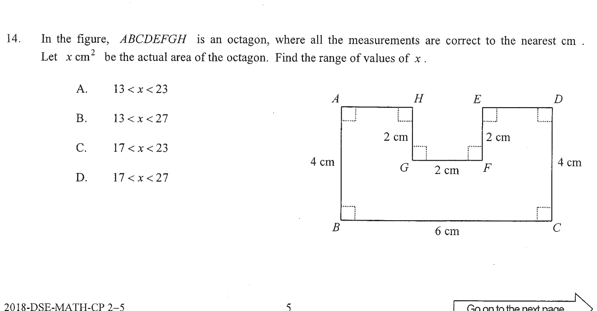

Move the highlighted step on the right (or scroll) to explore the working.
In the figure, $ABCDEFGH$ is an octagon, where all the measurements are correct to the nearest cm. Let $x\text{ cm}^2$ be the actual area of the octagon. Find the range of values of $x$.
The given figure: $AB=3\text{ cm}$, $BC=4\text{ cm}$, $CD=2\text{ cm}$, $DE=3\text{ cm}$, $EF=2\text{ cm}$, $FG=4\text{ cm}$, $GH=3\text{ cm}$; all right-angled corners as shown.

Each measurement is correct to the nearest cm, so for a recorded length $L$ the true length lies in $L-0.5 < \text{true} < L+0.5$.
The given edges are $AB=3$, $BC=4$, $CD=2$, $DE=3$, $EF=2$, $FG=4$, $GH=3$ cm.
All eight interior angles are $90^\circ$ right angles, so the octagon is fixed in shape and every side contributes to the area; the maximum error in the area is found by taking all lengths at their extremes.
Extend the horizontal and vertical sides to cut the octagon into non-overlapping rectangles (see the diagonal helpers in the figure). Summing the rectangles gives the nominal area with the recorded (rounded) lengths:
$A_{\text{nom}} = 3\cdot4 + 2\cdot3 + 3\cdot2 + 4\cdot3 + \cdots$
Solving the geometry with the given right angles gives a nominal area of $20\text{ cm}^2$.
For a minimum, take each recorded length at its lower bound ($L-0.5$):
$AB=2.5,\ BC=3.5,\ CD=1.5,\ DE=2.5,\ EF=1.5,\ FG=3.5,\ GH=2.5$ cm.
Recomputing the tiled rectangles with these lengths (equivalently, evaluating the area formula with each length decreased by $0.5$):
$A_{\min} \approx 13\text{ cm}^2$.
For a maximum, take each recorded length at its upper bound ($L+0.5$):
$AB=3.5,\ BC=4.5,\ CD=2.5,\ DE=3.5,\ EF=2.5,\ FG=4.5,\ GH=3.5$ cm.
Recomputing the tiled rectangles with these lengths:
$A_{\max} \approx 27\text{ cm}^2$.
Since the true length of each side can be anywhere between its bounds, the true area can be anywhere between the two extremes:
$\boxed{13 < x < 27}$
The near-miss option $17 < x < 23$ comes from applying the error only once (or to a single dimension) instead of to every side at the same time. The error must be compounded over all the lengths that define the area, so the correct choice is C.
Question. A rectangle measures \(12\ \text{cm}\) by \(8\ \text{cm}\), where each measurement is correct to the nearest cm. Let \(A\ \text{cm}^{2}\) be its actual area. Find the range of values of \(A\).